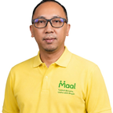
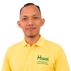

Tumbuh Bersama,
Usaha Lebih Ringan.
PT MAAL adalah agregator merchant berbasis prinsip syariah yang menghubungkan UMKM dengan ekosistem keuangan formal melalui aplikasi Falah.
Perdagangan dan kuliner adalah wajah terbesar UMKM Indonesia — ekonomi rakyat yang hidup setiap hari.
Akar masalah: belum terlihat sistem keuangan formal — bukan tidak layak dibiayai.
Sumber: Kementerian Koperasi dan UKM; Kemenko Perekonomian RI.
Agregator merchant syariah untuk UMKM Indonesia
PT Mitra Akselerasi Amanah Lestari (PT MAAL) adalah agregator merchant berbasis prinsip syariah yang menghubungkan UMKM dengan ekosistem keuangan formal.
PT MAAL adalah perusahaannya; Falah adalah aplikasinya — dua nama, satu amanah: membuat setiap usaha kecil terlihat, tercatat, dan tumbuh.
Makna "Maal"
Dari bahasa Arab: harta atau aset, seperti dalam Zakat Maal, Wakaf Maal, dan Baitul Maal. Bukan sekadar kekayaan, melainkan amanah yang membawa manfaat.
Makna "Falah"
Keberuntungan dan kesejahteraan yang utuh, dunia dan akhirat. Tujuan dari setiap transaksi yang tercatat jujur dan tumbuh berkah.
Visi
Menjadi infrastruktur ekonomi paling terpercaya di Indonesia, mengakselerasi pertumbuhan UMKM secara berkelanjutan melalui teknologi dan hubungan manusia yang bermakna.
Misi
Membangun ekosistem finansial inklusif yang memadukan kepercayaan manusia dengan sistem cerdas, memperluas akses pembiayaan syariah, dan menciptakan dampak jangka panjang bagi UMKM.
Nilai Inti
Enam Layanan dalam Satu Genggaman
Satu aplikasi untuk mencatat, menerima pembayaran, dan bertumbuh bersama komunitas.
Kasir Digital & Pembukuan
Gratis sejak hari pertama, pencatatan otomatis, laporan rapi.
Pembayaran QRIS
Terima pembayaran digital dari semua bank & e-wallet.
Dompet Merchant
Dana penjualan terkumpul aman, mudah ditarik kapan pun.
Komunitas Pedagang
Jaringan sesama UMKM untuk belajar dan saling menguatkan.
Akses Pembiayaan Syariah
Rekam jejak usaha membuka pintu pembiayaan wakaf produktif.
Layanan Terkelola
Pendampingan, pelatihan, konsultasi, pembiayaan, hingga pengembangan usaha berkelanjutan.
Cukup diajak bicara
Asisten cerdas di dalam aplikasi Falah yang mencatat, menghitung, dan mengingatkan — tanpa mengganggu pelayanan Anda.
Input Suara
Rekam transaksi sambil melayani pembeli, tanpa berhenti, tanpa mengetik.
Bahasa Sehari-hari
Si Falah paham "bahasa warung", item, jumlah, dan nominal diurai otomatis.
Scan Struk
Foto nota belanja; stok dan arus kas diperbarui otomatis.
Rekam Jejak Usaha
Catatan harian membentuk profil usaha yang membuka akses pembiayaan.
Dana umat, dikelola amanah, bergulir kembali untuk umat.
Dihimpun
Dana wakaf produktif dihimpun dan dikelola oleh nazhir (yayasan).
Disalurkan
Pembiayaan mikro syariah bagi merchant terkurasi melalui aplikasi Falah.
Ujrah, Bukan Bunga
Imbal jasa berupa biaya layanan tetap, bukan bunga atas pokok.
Bergulir Kembali
Pokok kembali ke dana wakaf; manfaat terus mengalir bagi umat.
Seluruh penyaluran mengikuti prinsip syariah, tanpa bunga, transparan, dan tercatat penuh dalam sistem.
Tim yang Membangun Amanah
Maryadi Aryo Laksmono
Founder & CEO
25+ tahun pengalaman perbankan institusional: Union Bank of California, ABN AMRO, Bank Niaga Private Banking, CIMB Niaga Syariah, PT. Kresna Graha Sekurindo Tbk, dan Phillip Capital Singapore.
Abib Zebacth Efod
Vice CEO & COO
Fajar Nurmansyah
Advisor to CEO
Humaira Zahra
Chief Financial Officer

Ketut Andi Setiawan
Chief Technology Officer
Farina H Kartasasmita
Chief Risk Officer

Adha Wahyudi
Chief Marketing Officer
Perjalanan Menuju Inklusi Finansial
Kasir digital & QRIS mulai beroperasi.
Dompet merchant aktif untuk seluruh mitra.
Pembiayaan wakaf produktif mulai disalurkan.
Perluasan nasional bersama LPD, BPR & Koperasi.
Distribusi memanfaatkan jaringan kepercayaan komunitas yang sudah ada, bukan membangunnya dari nol.
Dipercaya pedagang, dirancang untuk keseharian
"Dulu catat manual di buku, sering lupa. Sekarang cukup bilang ke Si Falah sambil masak — rapi sendiri."
"QRIS langsung masuk, dompet merchant jelas. Akhirnya usaha kecil saya punya rekam jejak yang bisa dipercaya bank."
"Komunitas pedagangnya hangat. Bisa tanya-tanya soal pembukuan tanpa malu — karena semua sama-sama UMKM."
Yang Sering Ditanyakan
Jawaban singkat untuk pedagang UMKM dan mitra institusi.
Tidak. PT MAAL bukan bank maupun lembaga pembiayaan. Kami adalah agregator merchant yang menghubungkan UMKM dengan ekosistem keuangan formal — PJP, bank syariah, nazhir wakaf, dan mitra pembiayaan — melalui aplikasi Falah.
Tidak ada bunga (riba). Seluruh layanan mengikuti prinsip syariah. Pembiayaan menggunakan skema ujrah — biaya layanan tetap, bukan bunga atas pokok. Dana wakaf produktif dikelola transparan dan tercatat penuh.
Kasir digital dan pembukuan gratis sejak hari pertama. Fitur QRIS, dompet merchant, dan layanan lanjutan tersedia sesuai paket dan kebutuhan usaha Anda — tanpa biaya tersembunyi yang membingungkan.
Pedagang UMKM ultra mikro — warung, kuliner, toko kelontong, dan usaha kecil lainnya — yang ingin mencatat transaksi, menerima QRIS, dan membangun rekam jejak usaha untuk akses pembiayaan syariah.
Gunakan Falah secara rutin untuk mencatat transaksi. Rekam jejak usaha yang terbentuk otomatis membuka pintu pembiayaan wakaf produktif dan mitra keuangan syariah — berdasarkan profil usaha, bukan jaminan rumah atau BPKB.
Ya. Data merchant dikelola dengan standar keamanan industri, enkripsi, dan akses terbatas. Kami tidak menjual data pedagang. Detail lengkap tercantum di Kebijakan Privasi kami.
PT MAAL beroperasi sebagai agregator merchant dan berkoordinasi dengan mitra yang berizin dan berlisensi — termasuk PJP terdaftar Bank Indonesia dan lembaga keuangan syariah — sesuai regulasi yang berlaku.
Tumbuh Bersama,
Usaha Lebih Ringan.
Mulai catat, terima pembayaran, dan tumbuh bersama ribuan pedagang UMKM di seluruh Indonesia.